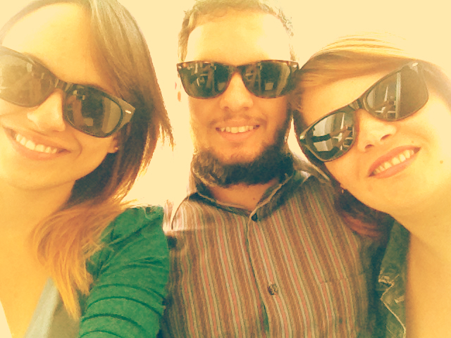

Era uma vez...

A Bolinho de Copo é uma marca familiar, criada pelos membros da família Souza - Luiza (cunhada), Lucas, meu digníssimo esposo, e eu Cheila. Ah... e um bebê a caminho, um meninão chamado Thor, que já está familiarizado com a loucura que é essa casa às vezes, e desde cedo apreciando um bom Cupcake.
Tudo começou quando tivemos uma luz, estava em casa e queria ocupar meu muito tempo livre, então tivemos a ideia de fazermos cupcakes, mas, não queriamos qualquer tipo, nosso propósito era ser diferente e saudável. E como atender essa expectativa?
Pensamos, pensamos e pensamos...
Como a chegada do bebê estava já marcada, queríamos que ele tivesse uma chance de viver em um mundo um pouco mais saudável, então, começamos a mudar nossos hábitos alimentares, afinal de contas, temos um ser indefeso, nesse mundo de produtos industrializados e conservantes aos montes. Foi quando ligamos as coisas: se queremos que nosso bebê viva em um ambiente mais saudável, precisamos expandir isso para as outras pessoas também, e assim, decidimos mudar o conceito de que doces são sempre calóricos e nada nutritivos. Com a idéia veio o desafio, como fazer isso?
Nesse momento pensamos em chamar a Luiza - também conhecida como Luli - uma apreciadora nata de doces, em especial Cupcakes. E ela de bom grado aceitou e adorou a proposta - estávamos tentando criar uma forma de alimentação mais saudável para seu sobrinho, o xodó da casa - e agora está ralando para dar conta dos estudos e nos ajudar a criar a marca. Isso é bom por que desde cedo aprende que a vida não é fácil. Hehe...
Com o time definido, começamos as pesquisas. Pesquisamos, pesquisamos, discutimos, pesquisamos de novo e depois de muitos stresse, mudanças e mais pesquisas, testes e mais testes, mudanças de ingredientes, chegamos ao produto final: nossas receitas foram criadas com ingredientes escolhidos a dedo, pensados para dar espaço para todo tipo de pessoa, incluindo as com algum tipo de intolerância ou restrições alimentícias quanto ao ovo, a lactose e o glúten, e aquelas que simplesmente, pensam na saúde e no bem estar.
Usamos farinhas que não contém glúten, o que foi um grande aprendizado, pois só conhecíamos a farinha branca comum e a integral, mas achamos no mercado inúmeras opções para todos os gostos e paladares. Depois de estudar cada uma definimos que usaríamos inicialmente a farinha de arroz por dar um sabor e uma textura muito diferente a massa, deixando-a mais leve e saborosa.
E não paramos por ai... pensando no não convencional, pegamos a ideia do cupcake (doce tipicamente dos Estados Unidos - me recuso a usar o termo Americano, pois todos da América do Norte, Central e Sul somos americanos) e colocamos uma pitadinha do bom e velho jeitinho brasileiro. Todas as nossas frutas vem daqui da nossa terrinha e disso tiramos nosso slogan: "O tradicional Cupcake com o bom jeitinho brasileiro". “Jeitinho” esse que não vem do improviso que só o brasileiro sabe fazer, mas da rica cultura do país, pois queremos realmente trazer o Brasil em cada receita. Resolvemos traduzir o nome CUPCAKE, e este automaticamente gerou nosso nome Bolinho de Copo, assim, substituimos o termo cupcake para bolinho, deixando tudo dentro de nossa língua materna.
Nossos bolinhos são feitos dentro de copos mesmos, tendo um destaque totalmente diferente dos que encontramos no mercado e nas grandes lojas. Sendo possível aprecia-lo com uma colher sem deixar de nos lambuzarmos com o recheio e a cobertura.
E por fim, para nossas coberturas queríamos algo simples, mas que ao mesmo tempo fosse bonito e delicado, então criamos coberturas com a própria fruta e com os ingredientes que usamos nos recheios, deixando mais saudável, pois não contém estabilizantes e nem conservantes, proporcionando um sabor típico das frutas e dos demais ingredientes, como o leite condensado de soja, por exemplo. Assim todos podem apreciar nossas coberturas e se esbaldar comendo.
Quase ia me esquecendo de falar sobre o nome das nossas receitas. Cada um de nós veio de um lugar diferente, eu sou sulista (“não falo leite quente que dá dor no dente da gente, mas, tenho o R puxado, que faz com que o Lucas e a Luli fiquem me zoando por isso”) mas, praticamente vivi a vida inteira em Campinas (interior de São Paulo), o Lucas nasceu em Jundiaí e a Luli em Franco da Rocha (grande de São Paulo), os dois são praticamente “nômades”, moraram em um monte de cidades do interior de São Paulo e outros estados até que o Lucas veio morar definitivamente na capital. Namoramos a distância por um tempo e um belo dia decidimos nos casar. Ele me tirou do interior e logo depois a Luli também veio morar com a gente para estudar. Nos apaixonamos pela cidade, por isso todos os nossos bolinhos de copo tem o nome de algum ponto turístico da cidade: Estação da Luz, Mercado Municipal Paulistano e Mosteiro São Bento. São lugares que de alguma forma, marcam nossa vida, pela história, arquitetura, e tudo mais.
E assim, criamos a Bolinho de Copo, pensando em melhorar um pouco a vida do Thor, que chegará em breve e também dos brasileiros.